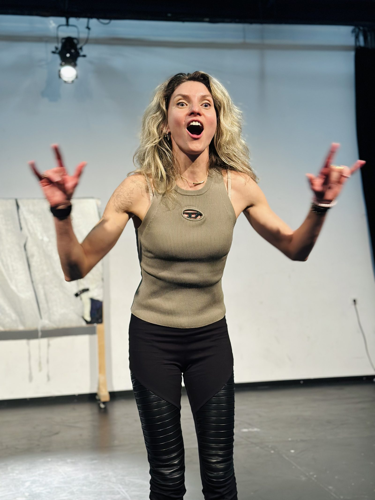
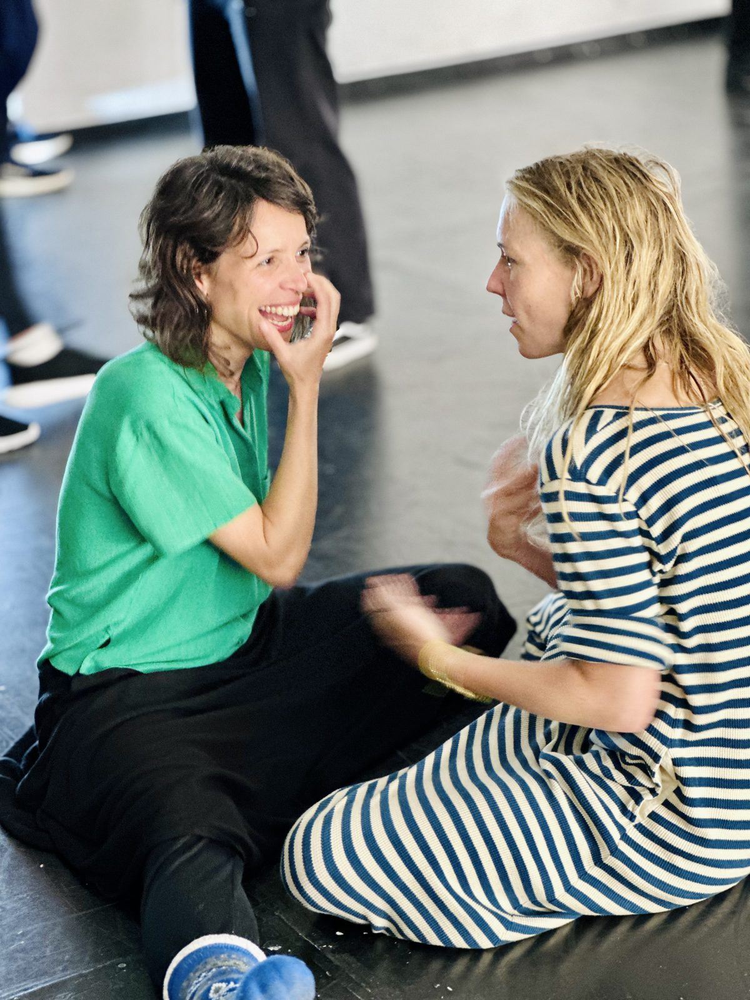
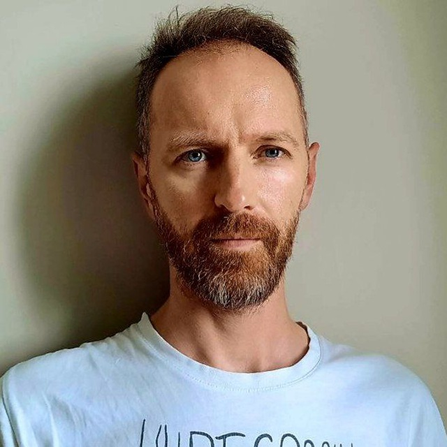
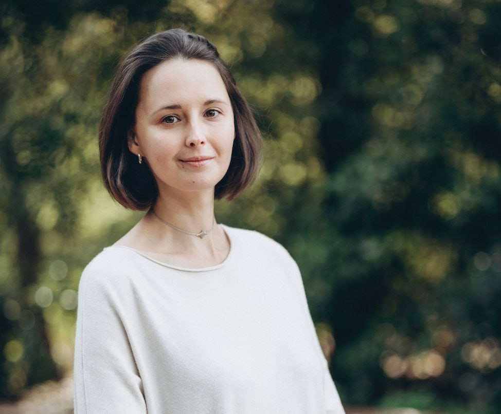
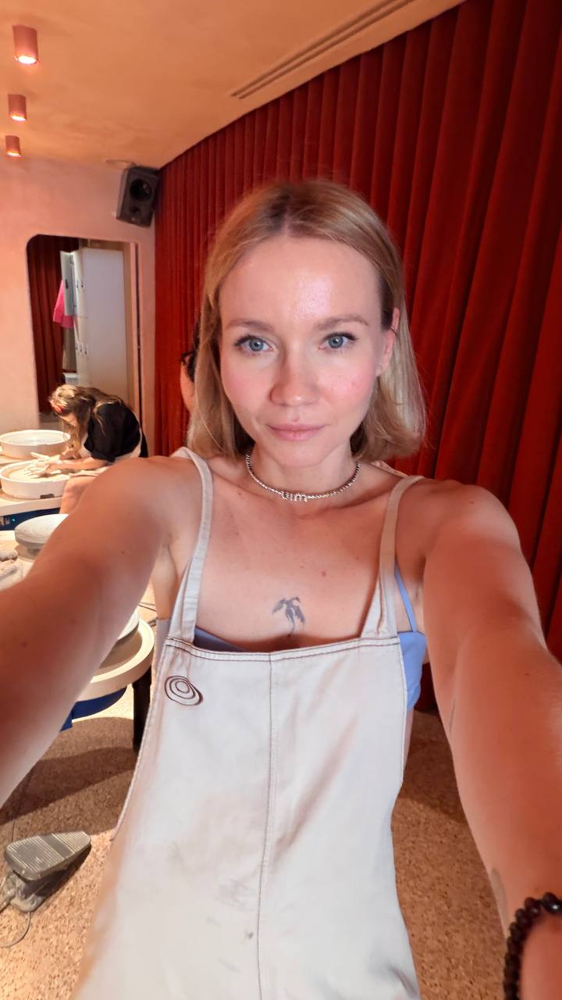

Presence
Notice what is actually happening before the mind turns it into a plan.
Two days with Pedro Fabião
A workshop on presence, authenticity and human connection, through the art of clowning.
A version of personal work fuelled by pure fun and aliveness.
Why this workshop
Many of us get very good at thinking, planning and managing ourselves. We check how we're coming across. We swallow the impulse before it reaches the room. We keep the difficult feelings private. And it works: you stay in control, good, correct, easy to be around.
But what you have got good at is a role. And the further in you go, into work, family, whatever needs solving this week, the more of you it takes up. You forget you have a body. Weeks go by without much taste to them. You forget that stopping is allowed, that pleasure is available, that meeting another person is something you can have rather than something you get through.
Being Before Doing is two days of taking the roles off. All of them except your own.
Notice what is actually happening before the mind turns it into a plan.
Try, fail, laugh and follow an impulse without needing to be good at it.
Meet yourself, another person and the room without hiding behind a role.
About the workshop
This two-day workshop is Pedro's introduction to clowning.
It isn't training to become a performer, though performers get a lot from it. The clown techniques are turned towards ordinary human things:
Everything we do is there to give more room to what makes you you. Your impulses, reactions, emotions, rhythms, hesitations, mistakes, and the particular way you meet the world.
The secret ingredient is the state of play.
It lowers your defences and gets you moving before your mind has time to plan the result. It also brings pleasure, spontaneity, curiosity and openness.
The workshop consists of a series of practices and games done as a whole group, in pairs, and sometimes individually. Deep connection and emotional release are the starting points. With the generous, mirroring presence of our partners and the audience, these experiences can lead us to discover something new about ourselves in a heightened state. Because the approach is rooted in the art of clowning, laughter will be omnipresent and sometimes punctuated by the occasional tears.

The workshop is built on one idea:

What clowning really is about — is connection. With yourself, with others, and with a whole audience. Because audiences don't lie.
It's being in your maximum authenticity and still feeling totally connected to others.
Workshop moments
Drag to explore · Click to enlarge Swipe to explore · Tap to enlarge
People come to this workshop from very different backgrounds: founders, managers, programmers, marketers, salespeople, accountants, coaches, therapists, teachers, actors and other artists. Wanting to clown, on a stage or anywhere else, is as good a reason to be here as wanting something in your own life to shift. No previous experience is expected.
Probably yes, if
Probably not now, if
Being sent by your therapist counts as a reason too. It happens more often than you would think.
You choose how far you go, but the learning happens through taking part.
Personal stories

Mistakes
“At Pedro’s workshop I understood for the first time that getting it wrong is great. That this is exactly the moment you feel alive.”
I’ve been doing theatre for almost twenty years, yet I spent much of that time afraid to try, fail or be fully seen. Pedro’s workshop changed the way I experience mistakes.
I’ve been doing theatre for almost twenty years. I act in films sometimes. And I’m afraid the whole time. Afraid to try, afraid to get it wrong. Very attentive, very careful, not very alive. On stage, on camera, and in life too.
As if someone is about to judge me, tell me off. Like I’m stuck to some image of myself, and that image doesn’t want to live for real: to risk anything, to feel anything.
Sometimes I manage to feel alive with friends, somewhere safe. More often: a wall.
At Pedro’s workshop I understood for the first time that getting it wrong is great. That this is exactly the moment you feel alive. And that you can use that energy to live.
Pedro’s workshop is fun. Very. At one point I was literally holding my stomach. Pedro is tactful. And very precise. He can needle you, but again, in a way that wakes life up.
Pedro feels every person in the room. He reads you and turns your attention to wherever the tension is gathering. He’s light, and ironic in a kind way. The atmosphere at the workshop is good, and he’s the one who makes it.
The exercises vary. You learn something about yourself constantly. You try things, you feel things. And all of it through play. Nothing forced.
That June workshop became one of the strongest experiences I’ve had in the last few years. I want to keep going towards myself. Any way I can. Through clowning too.
I’m really looking forward to the next meeting. With Pedro, with my clown, with the child in me, with my real self.

Play
“Now I’m sure there’s an inner clown living in each of us. A beautiful idiot.”
I expected something trendy and lightweight. Instead, the workshop became one of the warmest, most unique and valuable experiences I’ve had in a long time.
For my thirtieth birthday my friends hired a sad clown to “help me mark a depressing anniversary.” And it was... incredible. Jokes along the lines of “Why are we all smiling? We’re not seventeen any more!”, a round dance, touching moments, childlike delight. That clown, by the way, was the legendary Vanya Pinzhenin.
That was probably my first and last brush with clowning as an adult, until last weekend, when I sent myself off to a clown workshop.
Being Before Doing is run by Pedro Fabião, a well-known local clown. So many people in my Lisbon circle had already done it, and I’d seen so many reviews, that I’d decided it was a bit of a mainstream thing by now. I was so wrong.
Two days turned into a completely unique, warm and valuable experience that I’m still digesting. I’m sad it’s over, and I’m still getting my voice back: it disappeared the day after we finished, even though most of the exercises were mime (psychosomatics experts, over to you).
Now I’m sure there’s an inner clown living in each of us. A beautiful idiot, which is what we called each other in the group, since the whole workshop was in English. Some people let that part show and enjoy having it around. Others hide it and feel embarrassed, which is a shame. Because that part is the most alive, the most spontaneous, the most unguarded, the most sensitive, the most expressive and the most playful.
In that space of play and lightness and unbelievable amounts of laughter (I can’t remember the last time my face and my stomach hurt like that), something else opens up: the capacity for real, authentic (probably my word of the year, I’m exploring what it means in every way I can) and sometimes vulnerable contact with yourself and with the people around you.
The price was €200 for two days. The value is many, many times that. I got an enormous reset, a wonderful group of people, and deep work with different states.
The bonus track was realising that alongside Portuguese I need to bring English back into my life. Two years ago I could talk about anything, then I switched to learning a new language and dropped English, thinking I know it well enough anyway. Yeah, right. Without constant practice my C1 slid back to eternal pre-intermediate, and it drove me mad when I couldn’t find words, never mind making things up on the spot while standing on stage in front of an audience.
The other challenge was working with emotions, which a clown has to be able to show. And as we know, in our culture showing weakness or fear or anything like that is taboo, so I learned that kind of openness from my non-Russian-speaking groupmates.
So: delighted, want to do it again, fell in love with every person in our group and with the philosophy of clowning.

Letting go
“When you stop trying and just pour out what has built up, only something real can come out of you.”
I arrived afraid of being asked to perform. By the end, I had sung a song that did not exist, lost control completely and discovered how much energy had been trapped underneath.
On clowning, control and a song made of nothing
I went to Pedro’s clowning workshop this weekend. Pedro is, as we say in Russian, widely known in narrow circles.
I went with one firm condition: no “show us an act”, no “entertain the audience.” Otherwise I wouldn’t have walked into the room. My default mode in an unfamiliar group is quiet observer. I’m the one who slips neatly out of group lunches and unnecessary small talk so as not to spend the energy. I was afraid the nerves would hit and everyone would see my hands shaking.
In the end what unravelled me wasn’t fear. It was tiredness.
For two days we played furiously, did the tasks, laughed and cried to the point of hysterics, and there was a lot in all of it that was childlike, sincere and alive.
My moment of truth came at the end of the second day. Being a strong empath, I had already digested the emotions of everyone who went on stage before me. I had nothing left for resisting or for holding a respectable face. And then came the task: go out and sing a song that doesn’t exist, making it up as you go. Any style, any nonsense, complete improvisation, until the facilitator says “stop.”
Normally I’d have considered this hell. But I walked out resigned to my fate. Nothing left to lose, nothing left to defend myself with.
And it turned out that when you stop trying and just pour out what has built up, only something real can come out of you, and in those conditions I’m a walking emotional volcano. Pedro said I was “a born star.” From the outside it was obviously peak cringe, but that was the exact moment a tonne of old clenching left me. A strange, clean emptiness came after it, as if someone had cleared out the pipes the energy runs through.
A few thoughts since:
A clown isn’t about “being funny.” It’s about openness and being able to catch the vibrations coming off the audience. Being yourself is very vulnerable and, as it turns out, wildly effective.
On defences. My escape-and-avoid mechanism hasn’t gone anywhere, and I still think I need it. Empaths have a hard time without a fence. But the workshop showed me that I still spend energy on “seeming better” and on looking outside for confirmation that I’m bright, when there’s already plenty of it in there.
What now. I want to learn to hold that “star” feeling without the doping of outside approval. To just know the volcano is in there, even when I’m sitting silently in a corner.
Who I’d recommend it to: anyone with a sturdy psyche who needs a mental clear-out of everything unlived.
Who shouldn’t go: anyone who is unstable right now or living through trauma. The workshop is too intense, it can overheat you.
In short: an experience of liberation through completely losing control. It’s useful sometimes to let yourself be “cringe” and see that the world doesn’t fall apart. I’m now planning to send all my friends and acquaintances there, and in the summer I dream of talking Pedro into doing something like it for a group of children. One more fan for the regiment.
Participants on camera
Meet Pedro
Pedro Fabião has spent years training hospital clowns and actors around the world - hospital clowning being a profession that runs almost entirely on sensitivity and empathy. For years he directed Operação Nariz Vermelho, Portugal's hospital clown organisation.
He is also a psychologist, trained in psychodrama. The two halves aren't kept in separate rooms. The work is helping people find and express what's actually in them, and go gently through whatever is in the way.
His approach is playful, embodied and based on humour. Which doesn't keep difficult emotions away - and when they arrive, the work is finding what lets you say yes to the experience, so that something can move.
Hospital clowning is a profession that runs almost entirely on sensitivity and empathy.
Pedro teaches in more than 25 countries and has worked with Google, McKinsey, Columbia Business School EMBA, Skolkovo, NetJets, Red Nose International and The Humour Foundation, among others. He is one of the content creators of the program Evolution.NEW and a member of the Artistic Council of the Theodora Foundation.
Pedro's Approach
Everything is practical and rooted in lived experience, not abstract theory. We work from what is happening in the room and let the real felt experience guide the process.
Transformation requires risk. We learn to meet mistakes, embarrassment, and uncertainty without collapsing into self-judgment, so freedom and creativity can expand.
Practices are designed to help you act from a real impulse, respect your boundaries, and stay connected to your sensitivities, instincts, and inner resources even in bigger challenges.
We explore the stretch between comfort and overload: enough challenge to grow, but not so much tension that your system shuts down. This is where new choices can appear in real time.
Play lowers our defences, increases trust, and lets us experiment without taking ourselves too seriously. It is one of the most powerful ways to create transformation.
Everything in life that is extremely fun is something where we are a little bit out of control.
Only when the person says, “I want to play,” that’s when it starts.
Practical
10:00-18:00, both days
Keep the evening free until 19:00 in case we run over.
Lisbonin English
Exact address shared with confirmed participants closer to the date.
€190 until 15 September
€220 from 16 September
Maximum group size: 16 people.
Your place is confirmed once payment is received.
No. Most people arrive with none.
No. Humour is not something you have to produce here - it often appears when things do not go as planned.
We start at 10:00 and finish around 18:00 on both days, with an hour's break in the middle - there are cafés nearby, or bring something with you.
Keep the evening free until 19:00: depending on how the group is moving, we sometimes run over.
Comfortable clothes you can move in, indoor shoes or bare feet depending on the venue, water, and something for the breaks.
Yes. The workshop is one continuous two-day process. The second day builds on what happens during the first, and the consistency of the group helps create a safe working space.
The workshop is generally for participants aged 21 and over. Pedro occasionally makes exceptions for people aged 18 to 20 - message us and ask.
In Lisbon. We confirm the exact address closer to the date and send it to everyone who has booked.
Until 15 September: full refund, or transfer to a future workshop.
From 16 September: 50% refund if your place is filled. If it stays empty, the fee is non-refundable.